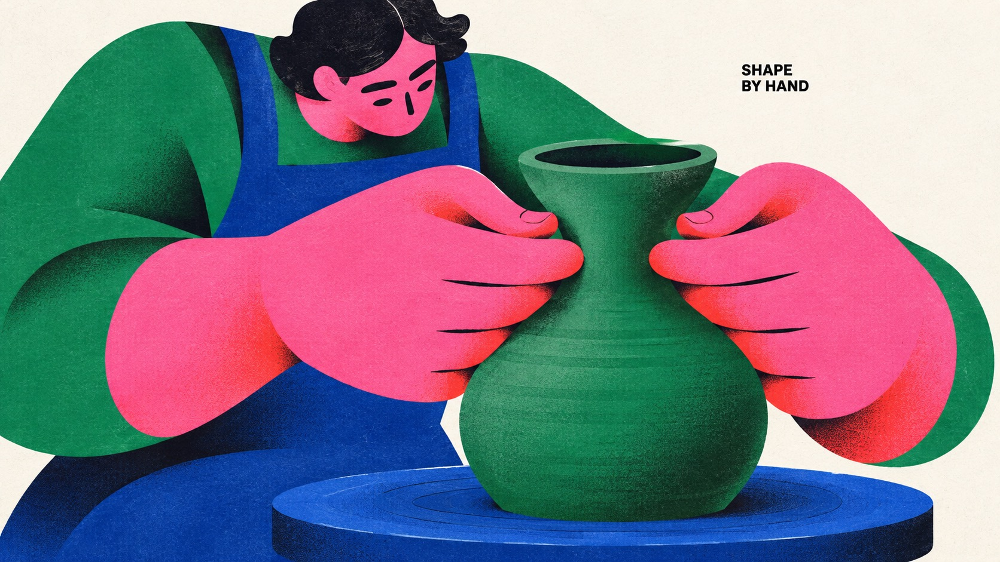
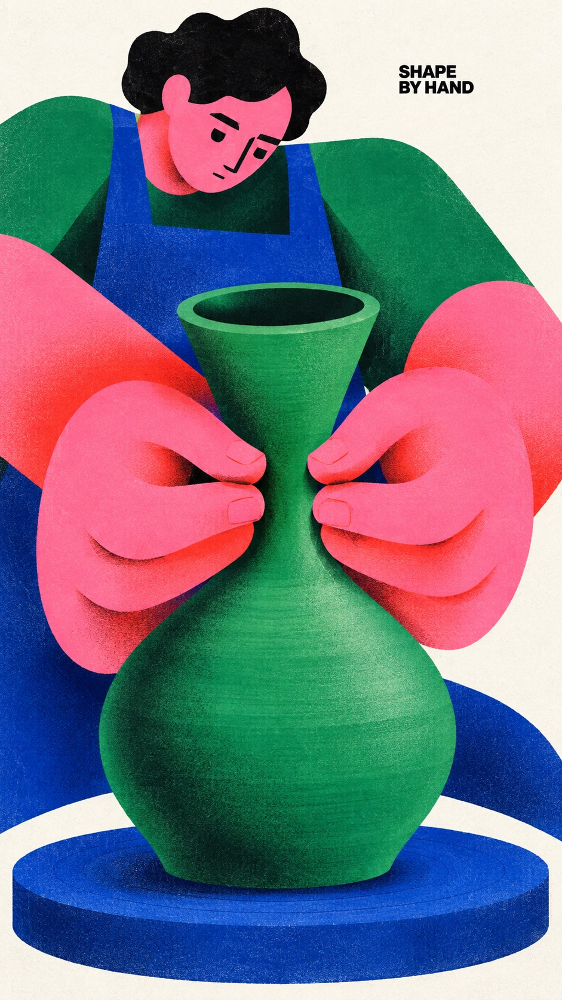
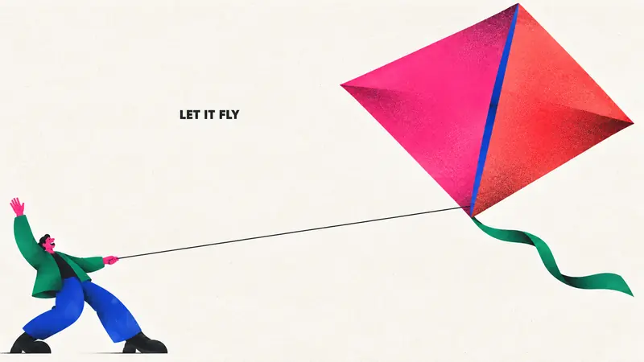
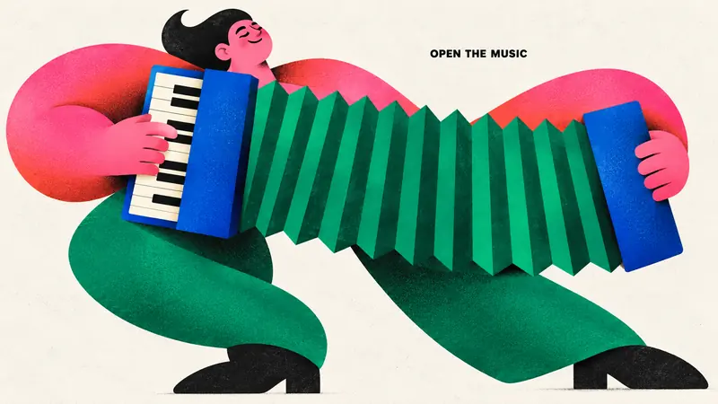
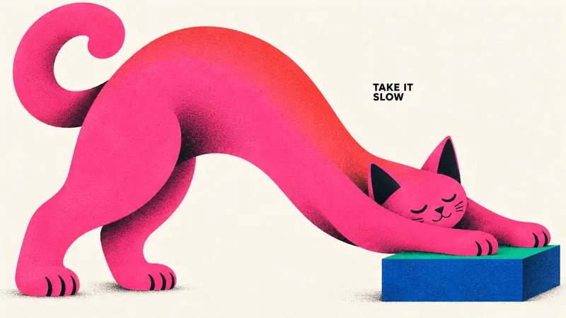

Type Posters · AI image style prompt
Chromatic Gesture Characters — Part 4
Part 4: pottery throwing, kite flying, accordion playing and a stretching cat in large geometric bodies and hot-pink clashes.


4 example cases
Same style.json, different subjects. Each case's values are in the examples section of the JSON.



What this style does
Part 4 of Chromatic Gesture Characters: continues the large geometric bodies, hot-pink clashes, minimal black faces and grainy print feel with pottery throwing, kite flying, accordion playing and a stretching cat.
Signature traits
- Build a monumental, asymmetric character silhouette from few interlocking circles, flattened capsules, wedges, tapered limbs and large flowing contour cuts; enlarge anatomy according to the emotional gesture.
- Use nearly black, radically reduced facial marks and weight-bearing accents; eyes, brows and mouth read as deliberately cut graphic shapes rather than detailed drawing.
- Pair a dominant hot pink or magenta color field with one adjacent warm red or coral gradient and two saturated cool counterweights, on an open off-white paper ground.
- Keep most shapes flat and crisply bounded, with localized dark-to-color airbrushed shading at overlaps or bends and the specified fine print texture; depth must remain graphic.
- Let the character-object interaction carry the poster; sparse small bold black uppercase sans-serif copy occupies a useful pocket of negative space.
- Change pose, gaze, crop, size relationships and title location to make the action legible; a full body, profile crop, enclosing gesture or reclining arrangement are equally valid.
style.json
{
"style_version": "1.0.0",
"style_name": "Chromatic Gesture Characters — Part 4",
"style_slug": "chromatic-gesture-characters-part-04",
"style_summary": "Part 4 of Chromatic Gesture Characters: continues the large geometric bodies, hot-pink clashes, minimal black faces and grainy print feel with pottery throwing, kite flying, accordion playing and a stretching cat.",
"environment_variables": {
"ASPECT_RATIO": "9:16 or 16:9",
"STYLE_FIDELITY_ANCHORS": "Runtime joined CORE and FLEX anchors from this spec",
"SOURCE_CONTENT_TO_AVOID": "Runtime joined source-specific content exclusions",
"SUBJECT": "New character identity and a small number of theme-bearing objects",
"ACTION": "Readable physical interaction and emotional expression",
"DESIGN_DIRECTION": "The case concept and its visible contribution to hierarchy and silhouette",
"PALETTE_DIRECTION": "Roles of saturated colors within the shared chromatic system",
"MAIN_TEXT": "Only visible wording, exact uppercase spelling without added punctuation",
"PORTRAIT_PLAN": "Composition intention for the 9:16 image",
"LANDSCAPE_PLAN": "Composition intention for the 16:9 image",
"SUBJECT_ACTION": "the readable physical interaction and emotional expression described in ACTION",
"PRODUCT_OR_PROP": "one or two oversized theme-bearing objects that join the character silhouette",
"LOCATION": "edge-to-edge off-white paper with no scene; depth implied only by overlapping shapes",
"BACKGROUND_ELEMENTS": "bare paper gaps, selective grainy airbrushed shadow and the small black caption",
"SECONDARY_TEXT": "none; MAIN_TEXT is the only visible wording",
"ACCENT_SYMBOL": "the minimal black cut-paper facial marks",
"WARDROBE_STYLE": "flat sculptural garment blocks in hot pink, coral red, cobalt and emerald"
},
"style_fidelity_anchors": [
"[CORE] Build a monumental, asymmetric character silhouette from few interlocking circles, flattened capsules, wedges, tapered limbs and large flowing contour cuts; enlarge anatomy according to the emotional gesture.",
"[CORE] Use nearly black, radically reduced facial marks and weight-bearing accents; eyes, brows and mouth read as deliberately cut graphic shapes rather than detailed drawing.",
"[CORE] Pair a dominant hot pink or magenta color field with one adjacent warm red or coral gradient and two saturated cool counterweights, on an open off-white paper ground.",
"[CORE] Keep most shapes flat and crisply bounded, with localized dark-to-color airbrushed shading at overlaps or bends and the specified fine print texture; depth must remain graphic.",
"[CORE] Let the character-object interaction carry the poster; sparse small bold black uppercase sans-serif copy occupies a useful pocket of negative space.",
"[FLEX] Change pose, gaze, crop, size relationships and title location to make the action legible; a full body, profile crop, enclosing gesture or reclining arrangement are equally valid.",
"[FLEX] Let a clay vessel and wheel, a diamond kite, accordion bellows, or a stretching cat and low step transform silhouette and negative space as part of the story, with no decorative prop pile.",
"[FLEX] Recompose portrait and landscape around their available width and height; preserve the case's conceptual relationship while changing overlaps and focal placement."
],
"source_content_to_avoid": [
"The original angry seated man with enormous sideways ear, black side-parted hair and crossed short legs",
"The two white pointed steam puffs issuing from nostrils",
"The exact phrase A LITTLE(BIG) MAD. and all source wording",
"The small oval creator stamp, source signature, watermark or brand identity",
"The original green sleeves, blue trousers, pink head and large black shoes repeated in the same placement",
"Part 1 content: saxophone player and puffed cheek, giant pear embrace, umbrella dance, reclining reader and giant book; replace their subjects, actions and wording.",
"Part 2 content: baker stretching dough, bicycle rider, giant dog and walker, frontal photographer and camera; replace their subjects, actions and captions.",
"Part 3 content: topiary gardener and shears, freediver with water ribbon, chess player and giant knight, mover with three-box stack; replace these subjects, actions and captions."
],
"visual_deconstruction": {
"source_observations": "The source enlarges the head and ear into a compressed standing monument. The tiny two-line caption is secondary. Magenta cheeks shift into red forehead; curved black mouth and slanted brows establish anger. Green and cobalt body forms stabilize the composition. White steam marks carve the figure.",
"reusable_system": "Emotion becomes shape, not facial detail. Scale contrast, black cut-shape expressions, complementary saturated blocks, grainy localized gradients and sparse paper space are transferable.",
"scope": "Part 4 of the established series. Preserve the shared rendering, palette relationships, small captions and exaggerated gesture while introducing pottery, kite flying, accordion playing and an independent animal character. Avoid reusing the prior twelve subject-action concepts."
},
"composition": {
"hierarchy": "Gesture silhouette first, face/object relationship second, small caption third. Keep visual complexity low.",
"negative_space": "Use paper gaps to separate limbs and objects and to carry the caption; no decorative panel framing.",
"ratio_adaptation": "Use the applicable case plan. Portrait may stack or climb; landscape may unfold or stretch. Do not crop a finished portrait to fill the landscape."
},
"typography": {
"family": "Compact bold grotesk sans-serif, plain black uppercase",
"role": "Small editorial aside, approximately 4 to 7 percent of image height as a complete text block, subordinate to the illustration",
"copy": "Render MAIN_TEXT verbatim once. Line breaks are flexible; no additional punctuation, byline, labels or fabricated logo."
},
"color_palette": {
"paper": "#F3F1EB",
"ink": "#10100F",
"hot_pink": "#F553D2",
"warm_red": "#F42726",
"cobalt": "#293EA1",
"emerald": "#13785D",
"relationships": "Hot pink plus warm gradient against emerald and cobalt; roles may shift per case. Use off-white as active negative space and near-black as graphic weight."
},
"image_treatment": {
"medium": "Raster illustration with the shape economy of cut-paper and airbrushed screen print",
"texture": "Fine, low-contrast stochastic halftone-like ink stipple and paper tooth, approximately 1 to 3 pixels at a 1500-pixel short edge. Most visible inside saturated and black shapes; very faint in the off-white background. Dark grain concentrates in shaded overlaps. No large scratches, folds, distress or coarse canvas weave.",
"edges_and_light": "Crisp contour silhouettes, softly diffused interior gradient shadows limited to overlaps and volume turns; matte ink, no glossy 3D illumination."
},
"design_rules": [
"Each case must turn its action into a distinct silhouette and meaningful negative-space relationship.",
"Keep limb and hand anatomy intentionally simplified but physically readable; no accidental extra appendages.",
"Objects must participate in the gesture at an expressive scale instead of floating as accessories.",
"Keep the exact short caption clearly readable with generous separation from the focal face and object.",
"Produce a full-bleed artwork on off-white paper, without a framed mockup or photographic scene.",
"Keep color count controlled and reduce background detail to marks necessary for the case."
],
"do": [
"Use large asymmetric masses with small facial marks.",
"Use white gaps as structural parts of the gesture.",
"Recompose both ratios deliberately.",
"Keep texture integrated with ink and preserve clean silhouette contours."
],
"avoid": [
"Copying the source character, angry pose, steam icons or signature.",
"Photorealistic people, shiny toy renderings, generic cute mascots or outlined cartoons.",
"Huge headline typography, dense labels, decorative stars and extra logos.",
"Four identical centered seated poses with different accessories."
],
"prompt_template": "Use case: stylized-concept. Create one finished {ASPECT_RATIO} editorial character poster in the Chromatic Gesture Characters visual system. This is a standalone raster artwork, edge-to-edge off-white paper, with no surrounding mockup.\n\nPRIORITIZED STYLE:\n{STYLE_FIDELITY_ANCHORS}\n\nSUBJECT: {SUBJECT}\nACTION AND EMOTION: {ACTION}\nDESIGN INTENTION: {DESIGN_DIRECTION}\nCOLOR ROLES: {PALETTE_DIRECTION}\n\nRATIO ADAPTATION: if 9:16, follow this portrait direction: {PORTRAIT_PLAN} If 16:9, follow this landscape direction: {LANDSCAPE_PLAN} Use only the plan appropriate to the requested ratio. Make a coherent single image with natural paper margins.\n\nTEXT: Render exactly \"{MAIN_TEXT}\" once, without quotation marks or punctuation. Plain bold black uppercase grotesk sans-serif, small editorial caption rather than headline. Flexible line breaks in a meaningful empty pocket. No other text or logo.\n\nPRINT FINISH: Fine, low-contrast stochastic halftone-like ink stipple and paper tooth, about 1 to 3 pixels at a 1500-pixel short edge, most visible inside saturated and black shapes, very faint in the off-white background. Dark grain concentrates in shaded overlaps. Crisp silhouette edges; selective soft dark-to-color spray gradients inside overlapping shapes. Matte ink, predominantly flat graphic forms; no glossy 3D rendering or coarse distress.\n\nSOURCE CONTENT TO REPLACE:\n{SOURCE_CONTENT_TO_AVOID}\n\nEXCLUSIONS: no additional words, signatures, logos, watermark, angry source character, steam puffs, extra fingers or limbs, realistic skin, outlined cartoon look, 3D plastic, photographic set, border, dense background, coarse canvas weave, oversized headline or gratuitous decoration.",
"negative_prompt": "Source angry man, steam puffs, original caption, creator oval stamp, copied identity, watermark, logo, extra text, punctuation, extra limbs, disconnected grips, glossy 3D toy, photorealism, outlined cartoon, coarse weave, distress scratches, huge headline, clutter, frames, poster mockup; no previous saxophone, pear, umbrella, book, dough, bicycle, dog walker, camera, topiary, diver, chess knight or box-stack concepts.",
"examples": [
{
"case_name": "clay-in-motion",
"values": {
"SUBJECT": "An absorbed adult potter with a small pink face, near-black short wavy hair, cobalt apron, emerald sleeves and two monumental hot-pink hands shaping one tall emerald-green clay vessel on a simple cobalt-blue elliptical pottery wheel.",
"ACTION": "The two hands gently press opposite sides of the vessel at its narrowed neck while the small face leans forward to watch. The vessel has a broad belly, a pinched neck and an open oval mouth; its base visibly contacts the wheel. Hand pressure and the hollow rim are clear, with no tools or extra pots.",
"DESIGN_DIRECTION": "Use a pinched hourglass vessel between two sweeping pink palms, with the flat elliptical wheel beneath as a contrasting horizontal base. The pot is an active material shaped by the hands, not a fruit being hugged. Keep the little face high above the hands; emphasize inward pressure and the open rim.",
"PALETTE_DIRECTION": "Hot-pink palms and wrists with coral-red at the bends; emerald clay vessel with dark inner oval, cobalt apron and wheel disk, emerald sleeve planes, near-black hair and tiny face marks, off-white paper.",
"MAIN_TEXT": "SHAPE BY HAND",
"PORTRAIT_PLAN": "Stack open vessel mouth, constricting hands, vessel belly and elliptical wheel vertically. The small focused face peeks above one hand. Retain the whole pot silhouette, visible rim and base-to-wheel contact; small caption in a quiet upper paper pocket.",
"LANDSCAPE_PLAN": "Place the small leaning face and shoulders toward one side; spread the huge pink hands around the emerald vessel at center-right. The cobalt wheel extends as a broad low ellipse. Keep both pressure points, the hollow rim and pot-to-wheel contact visible; caption in an upper paper gap. No studio background."
}
},
{
"case_name": "let-it-fly",
"values": {
"SUBJECT": "A delighted adult kite flyer with a tiny hot-pink face, emerald jacket, cobalt trousers and near-black shoes, holding a single taut black string attached to a monumental hot-pink and coral-red diamond kite with a narrow cobalt center spar.",
"ACTION": "The small flyer plants two feet apart, leans back and grips the kite string with one clearly connected hand; the other arm reaches upward. The huge diamond kite rises diagonally away, with its four corners visible. A short plain emerald tail curves from the bottom point; no bows or decorative swarm.",
"DESIGN_DIRECTION": "Make a large tilted diamond occupy one end of a long black tension line and a much smaller human counterweight the other end. The airy paper gap is the main space, with angular windborne geometry replacing the dense object compositions of other cases. The line connects visibly from hand to the kite near its lower center.",
"PALETTE_DIRECTION": "Giant kite split into hot-pink and coral-red planes, a slim cobalt spar, emerald tail and jacket, cobalt leg shapes, pink face and hand, near-black shoes/string/face, off-white paper.",
"MAIN_TEXT": "LET IT FLY",
"PORTRAIT_PLAN": "Place the complete giant diamond kite high toward the right, with the small grounded flyer low to the left. A single long diagonal string crosses open paper. Leave clear paper margin around all four kite corners, feet and tail. Small caption in a left-side upper pocket.",
"LANDSCAPE_PLAN": "Place the small leaning flyer at far left and the huge tilted diamond at upper right, with the single tension string traversing the broad white gap. Keep all four corners, short tail and both feet inside the canvas; quiet caption above the middle of the string, without touching it."
}
},
{
"case_name": "open-the-music",
"values": {
"SUBJECT": "A spirited adult accordion player with a small pink smiling face, near-black swept hair, broad hot-pink and coral-red rounded arms, emerald trousers and an oversized cobalt-blue accordion with emerald zigzag bellows and a simple ivory-and-black piano-key strip.",
"ACTION": "The hands stay on opposite end panels of the accordion as the player opens the bellows across the torso. One simplified hand engages the visible keyboard strip; the other anchors the plain opposite panel. The little face nods above the instrument. No extra instrument, notes, sound waves or stage.",
"DESIGN_DIRECTION": "Make the accordion's repeated emerald pleat geometry a strong angular band between two pink rounded arms. Expanding bellows expresses music through structure, not floating symbols. The blue end panels and visible single keyboard strip identify the instrument; keep its surfaces unbranded.",
"PALETTE_DIRECTION": "Broad hot-pink arms and torso warmed to coral at overlaps; cobalt accordion end panels, emerald bellows and trouser shapes, ivory keys with near-black black keys, black hair and minimal face, off-white paper.",
"MAIN_TEXT": "OPEN THE MUSIC",
"PORTRAIT_PLAN": "Tilt the opened accordion diagonally through the middle beneath the small head. The two big pink arms bend around its ends; compact legs support the form below. Keep both instrument ends, hands and recognizable bellows visible; small caption in open upper paper.",
"LANDSCAPE_PLAN": "Extend the bellows widely across the central width between two rounded pink arm masses, with the small head above one side. Keep the blue end panels, keyboard strip and both hand contacts intact; small exact caption in the upper paper pocket. Avoid turning this into a saxophone-style profile."
}
},
{
"case_name": "slow-stretch",
"values": {
"SUBJECT": "One oversized stylized hot-pink cat with coral-red along its curved back, a long curled tail, near-black triangular ear interiors and tiny closed-eye marks, stretching its two front paws onto a single low cobalt step with an emerald top plane.",
"ACTION": "The cat lowers its sleepy head between two elongated forelegs resting on the step, while its hindquarters rise and two bent hind legs stay planted on the paper ground. Four distinct paws remain readable; tail curls upward. The small curved mouth and closed eyes show contentment; no human, collar or leash.",
"DESIGN_DIRECTION": "The cat's curved back and long paired forelegs enclose a large off-white arch above the little rectangular step. The rising tail provides a second curve and the tiny head is subordinate to the torso. Use simplified smooth body planes rather than furry detail; this animal-only image remains in the same character-poster family.",
"PALETTE_DIRECTION": "Hot-pink torso, limbs and tail shift to coral-red along the back and dark granular overlap shadows; cobalt low step with emerald top, near-black ear interiors and face/paw accents; off-white paper.",
"MAIN_TEXT": "TAKE IT SLOW",
"PORTRAIT_PLAN": "Lift the tail into the upper paper space and let the large arched torso descend diagonally toward two front paws on the low step at lower right. Two hind paws remain behind at lower left. Keep the full tail tip, ears and four paws inside the canvas; small caption in upper-side paper.",
"LANDSCAPE_PLAN": "Stretch the long cat body across the width, hindquarters and curled tail at left, sleepy lowered head and paired front paws resting on the step at right. The white arch under the torso must remain clear. Keep tail and all paws visible; small caption above the arch. No yarn, extra animals or furniture."
}
}
],
"category": "Type Posters"
}